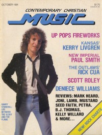

CMnexus
:
Contemporary Christian culture, music, and media.
Magazines
Profiles
Dove Awards
cmnexus.org
CM
nexus
→
Profiles
→
D
→
Devlin Donaldson
Devlin Donaldson
< -- Prev
ious
Next-- >
1
2
3
4
5
Writing credits listing
Jun 1981
in
Contemporary Christian Music
3.12
"Super Spiritual Spasm"
Don Francisco
Jul 1981
in
Contemporary Christian Music
4.1
Illinois Jam

Oct 1981
in
Contemporary Christian Music
4.4
"Life Between The Glory And The Flame"
Randy Stonehill
"How Illinois' First Rock Fest Got Into A Jam"
Illinois Jam
81,
Golden Harp
Randy Stonehill
-
Between the Glory & the Flame
Dec 1981
in
Contemporary Christian Music
4.6
Tom Howard
-
Danger in Loving You
Aug 1982
in
Contemporary Christian Music
5.2
"The Archers, Camp and Isaac Color the Rainbow"
The Archers
,
Steve Camp
,
Isaac Air Freight
; Rainbow Music Hall
Nov 1983
in
Contemporary Christian Magazine
6.5
"Band On The Move"
Petra
Jul 1984
in
Contemporary Christian Magazine
7.1
Rob Cassels Band
-
Kamikaze Christian
Sep 1984
in
Contemporary Christian Magazine
7.3
Nancyjo Mann
-
Value of Life
Oct 1984
in
Contemporary Christian Magazine
7.4
Stryper
-
The Yellow and Black Attack
Feb 1985
in
MusicLine
2.10
Billy Sprague
-
What a Way to Go
Mar 1985
in
Contemporary Christian Magazine
7.9
The Imperials
-
Let the Wind Blow
Petra
-
Beat the System
Carman
-
Comin' On Strong
Pam Mark Hall
-
Supply and Demand
John & Patti Thompson
-
Hope of the Heart
Billy Sprague
-
What a Way to Go
London Philharmonic Orchestra
-
Hymns Triumphant Vol. II
Rob Frazier
-
Cut It Away
The Archers
-
All Systems Are Go
Bebe & CeCe Winans
-
Lord Lift Us Up
Harry Browning
,
Laury Boone Browning
-
Push Back The Darkness
Mar 1985
in
MusicLine
2.11
Tom Howard
,
Billy Batstone
-
One by One
various artists -
Let Trumpets Be Triumphant
Maranatha Praise
-
I Am II
Apr 1986
in
Contemporary Christian Magazine
8.10
The Imitators
-
Once and for All
Jun 1986
in
Contemporary Christian Magazine
8.12
Jackson Browne
-
Lives in the Balance
Jul 1986
in
Contemporary Christian Magazine
9.1 / 2
Leon Patillo
-
A Funny Thing Happened
Sep 1986
in
Contemporary Christian Magazine
9.3
"Jumping On The Voltz Wagon"
Greg Xavier Volz
Sheila Walsh
-
Shadowlands
Morgan Cryar
-
Fuel on the Fire
May 1987
in
CCM
9.11
"Messiah Metal"
Metal
,
Bloodgood
,
Leviticus
,
Saint
,
Barnabas
,
Messiah Prophet
Bloodgood
-
Detonation
Leviticus
-
The Strongest Power
Saint
-
Time's End
Barnabas
-
Little Foxes
Messiah Prophet
-
Master of the Metal
May 1987
in
Christian Life
49.1
The Imperials
-
This Year's Model
Jul 1987
in
CCM
10.1
Don Francisco
-
The Power
Bebe & CeCe Winans
-
Bebe & Cece Winans
Aug 1987
in
CCM
10.2
Bride
-
Show No Mercy
Sep 1987
in
CCM
10.3
various artists -
Voices
Whiteheart
-
Don't Wait for the Movie: The Video Album
Oct 1987
in
CCM
10.4
Whitecross
-
Whitecross
John Mehler
-
Back in Love
Nov 1987
in
CCM
10.5
Bryan Duncan
-
Whistlin' in the Dark
Connie Scott
-
Hold On
Dec 1987
in
CCM
10.6
Malachia
-
Red Sunrise
Trytan
-
Celestial Messenger
< -- Prev
ious
Next-- >
1
2
3
4
5
CMnexus
(noun)
The magazine index
of modern music
and Christianity
© 2011 CMnexus. Last updated May 2025.
Contact:
Rants and other correspondence to:
editor -AT- cmnexus
-DØT- org
About